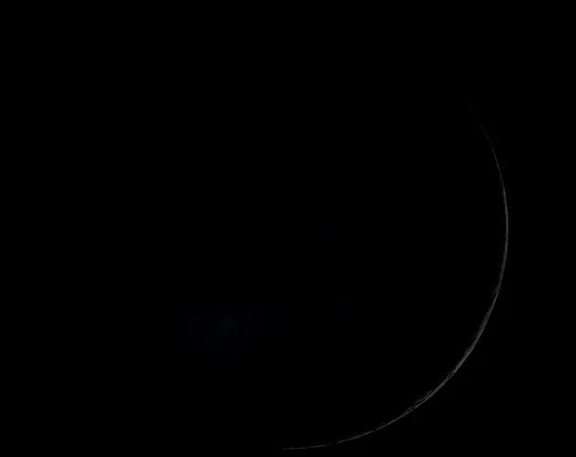
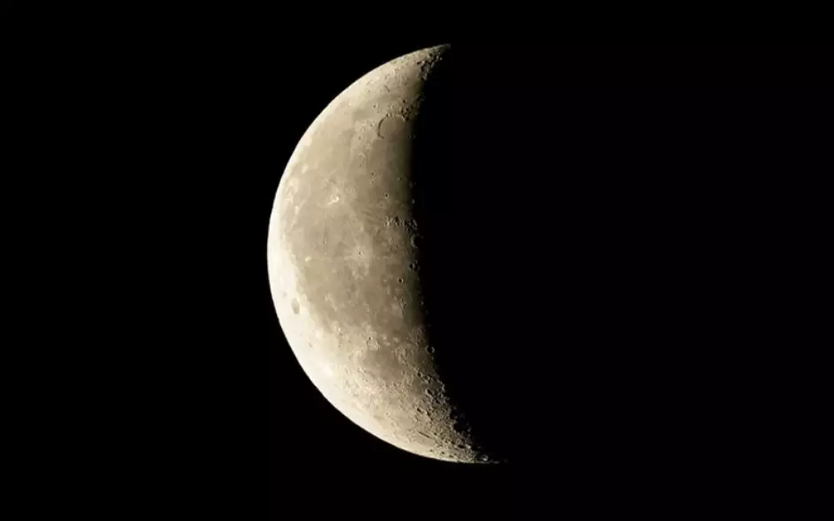
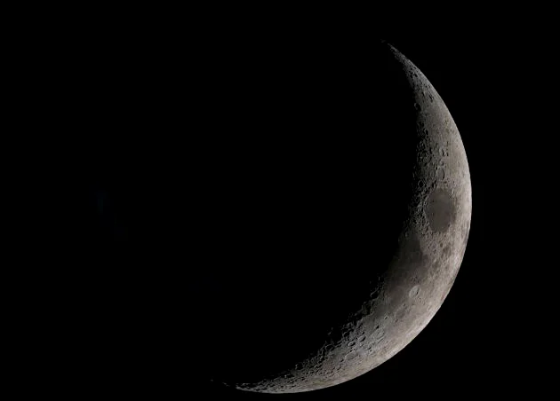
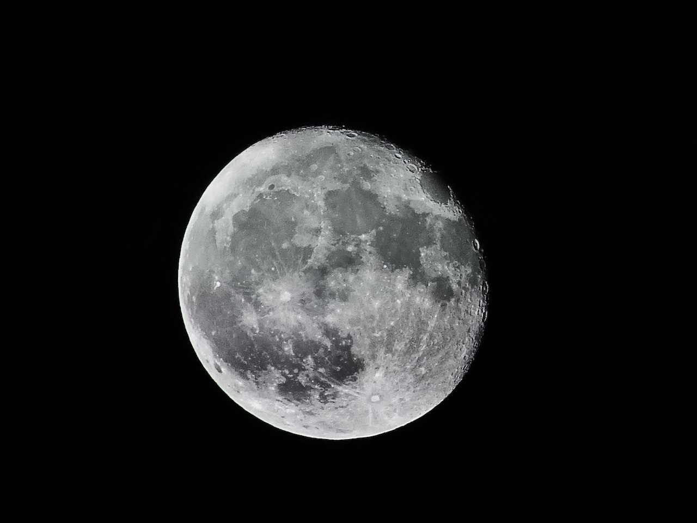

Lua
A Lua é o único satélite natural da Terra e é o quinto maior satélite do Sistema Solar. Ela orbita a Terra a uma distância média de cerca de 384.400 km e é um objeto celestial muito importante para a humanidade desde tempos imemoriais.
Características físicas
- A Lua tem um diâmetro de cerca de 3.474 km, cerca de um quarto do tamanho da Terra
- Sua massa é de cerca de 1/80 da Terra
- A Lua é um objeto geologicamente morto, com atividade vulcânica extinta há bilhões de anos.
- Sua superfície é coberta por crateras, montanhas, vales e planícies. A maior delas é a Bacia do Mare Imbrium, com cerca de 1.100 km de diâmetro.
- A Lua não tem atmosfera significativa e sua temperatura varia de cerca de -173°C a 127°C, dependendo da localização
Movimentos e fases da Lua
A Lua orbita a Terra em cerca de 27,3 dias, o que é conhecido como mês lunar. Como a Lua orbita a Terra, ela também gira em torno de seu próprio eixo, levando o mesmo tempo para completar uma rotação. A partir da Terra, podemos ver diferentes fases da Lua, como a Lua Cheia, Lua Nova, Crescente e Minguante, dependendo da posição relativa da Lua, Terra e Sol
| Imagem | Fases | Informações |
|  | Lua Nova |
Nessa fase, a Lua está entre a Terra e o Sol, e seu lado iluminado não é visível da Terra. É quando a Lua começa a se mover em sua órbita ao redor da Terra e o início de um novo ciclo lunar. |
|  | Lua Crescente |
A Lua crescente é quando a parte iluminada da Lua começa a aparecer no céu, formando um crescente. Nesta fase, a Lua está se afastando do Sol e se movendo em direção ao primeiro quarto |
|  | Lua Minguante |
A fase minguante ocorre quando a parte iluminada da Lua começa a diminuir, parecendo um crescente invertido. Nesta fase, a Lua está se movendo em direção à Lua nova, completando assim um ciclo lunar completo |
|  | Lua Cheia |
A Lua cheia ocorre quando a Terra está entre a Lua e o Sol, fazendo com que o lado totalmente iluminado da Lua seja visível da Terra. Essa é a fase mais brilhante da Lua e é associada a lendas e histórias em muitas culturas |